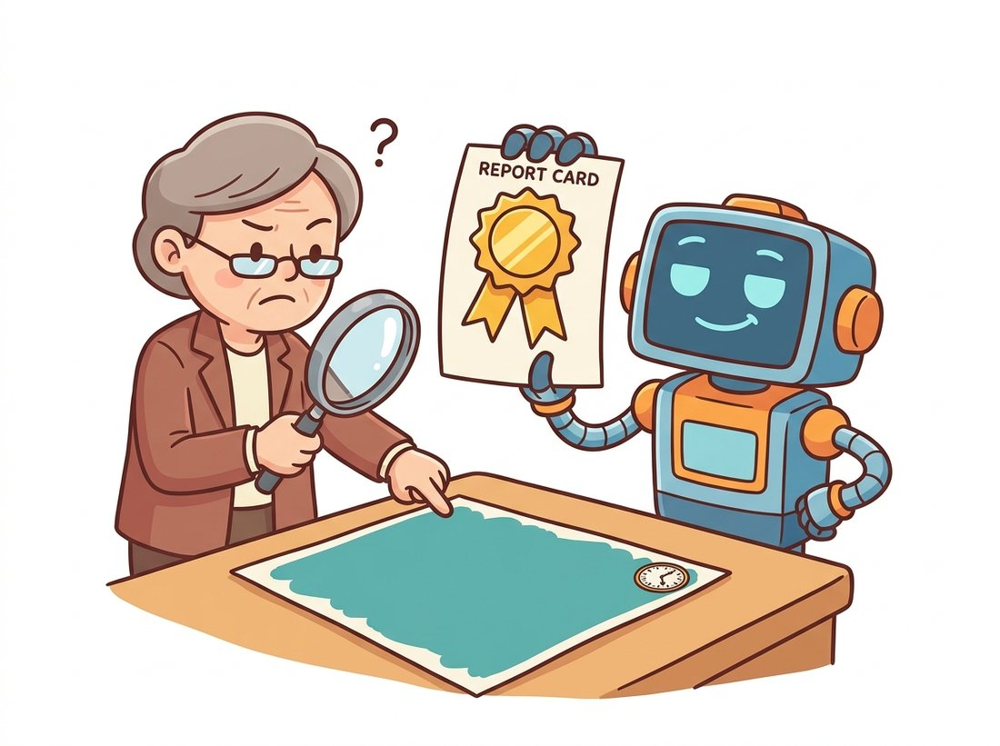

"They trained me to maximize pixel accuracy, so I labeled everything 'background' and scored 98 percent. Then someone introduced me to Intersection-over-Union, and for the first time my grade actually depended on finding the small, rare, important things. Humbling, but fair."
A Segmenter That Learned the Difference Between a Number and a Score
Dense prediction lives or dies by two choices, the loss you train on and the metric you report, and the central difficulty is class imbalance: in most images the interesting classes occupy a small fraction of the pixels, so a naive loss and a naive metric both reward ignoring them. Pixel cross-entropy is the workhorse loss but is dominated by the majority class; Dice and Tversky losses optimize overlap directly and are robust to imbalance; focal loss down-weights easy pixels so the model attends to hard ones. On the metric side, pixel accuracy is misleading for the same imbalance reason, so the field reports Intersection-over-Union, averaged across classes as mean IoU, and adds boundary-F1 when edge precision matters and panoptic quality when instances do. Pick the loss for your imbalance and the metric for your application, or you will optimize the wrong thing.
The architectures of this chapter are only half the story; the other half is how you train and judge them. Every section so far has deferred its loss and its metric to here, and the reason they share one section is that they share one enemy, imbalance. This is the dense, learned descendant of the PSNR and SSIM image-quality metrics of Chapter 1 and the IoU and mAP of detection in Chapter 23, and it extends naturally into the distribution metrics like FID in Chapter 37.
1. Losses for Dense Prediction Intermediate
Here is the uncomfortable fact every dense-prediction project eventually meets: the loss that trains your segmenter and the metric that grades it can both quietly reward a model for ignoring the very pixels you care about. The default segmentation loss is pixel-wise cross-entropy: treat every pixel as an independent classification example and average the cross-entropy over all of them, exactly as introduced in Section 24.1. It works well when the classes are roughly balanced. When they are not, and they rarely are, a problem appears. If 95 percent of pixels are background, the loss is dominated by background pixels, and the model can drive the loss low while barely learning the rare foreground class. Three families of loss address this.
The Dice loss optimizes overlap directly. The Dice coefficient between a predicted soft mask $p$ and a ground-truth mask $g$ is twice their intersection over the sum of their areas, and the loss is one minus it:
Because Dice is a ratio of foreground quantities, it is insensitive to the number of background pixels; a tiny lesion contributes as much to the loss as a large organ. The Tversky loss generalizes Dice by writing the denominator as the true positives plus a weighted sum of the two error types, with weights $\alpha$ and $\beta$ that trade off false positives against false negatives:
The middle term $\sum_i p_i (1 - g_i)$ counts false positives (predicted foreground where truth is background) and the last term $\sum_i (1 - p_i) g_i$ counts false negatives (missed foreground), so raising $\beta$ above $\alpha$ makes each miss hurt more than each false alarm; setting $\alpha = \beta = 0.5$ recovers Dice exactly. This is why Tversky is the loss of choice when missing the object (a false negative) is costlier than over-segmenting (a false positive), as in medical screening, where a high $\beta$ directly purchases higher recall on the rare class.
The third family attacks imbalance from a different angle. Where Dice and Tversky rebalance by ignoring background volume, the focal loss, borrowed from detection, rebalances by difficulty. It multiplies the cross-entropy of each pixel by $(1 - p_t)^\gamma$, where $p_t$ is the predicted probability of the true class, so confidently-correct easy pixels are down-weighted and the gradient concentrates on hard, often boundary or rare-class, pixels.
In practice a combination, typically cross-entropy plus Dice, is the robust default, getting the stable gradients of cross-entropy and the imbalance-robustness of Dice. The code below implements Dice and focal so the mechanics are concrete.
# Two imbalance-robust losses for dense prediction, implemented from scratch.
# Dice optimizes class-wise overlap and is insensitive to background volume;
# focal down-weights easy, confidently-correct pixels via a (1-pt)**gamma factor.
import torch
import torch.nn.functional as F
def dice_loss(logits, targets, num_classes, eps=1.0):
"""Soft multi-class Dice loss. logits: (B, C, H, W); targets: (B, H, W) ints."""
probs = logits.softmax(dim=1) # per-pixel class probs
onehot = F.one_hot(targets, num_classes).permute(0, 3, 1, 2).float() # (B, C, H, W)
inter = (probs * onehot).sum(dim=(0, 2, 3)) # per-class intersection
card = probs.sum(dim=(0, 2, 3)) + onehot.sum(dim=(0, 2, 3)) # per-class areas
dice = (2 * inter + eps) / (card + eps) # per-class Dice score
return 1 - dice.mean() # average over classes
def focal_loss(logits, targets, gamma=2.0):
"""Multi-class focal loss: down-weights easy, confidently-correct pixels."""
ce = F.cross_entropy(logits, targets, reduction="none") # (B, H, W) per-pixel CE
pt = torch.exp(-ce) # prob of the true class
return ((1 - pt) ** gamma * ce).mean() # focal modulation
logits = torch.randn(2, 4, 32, 32, requires_grad=True) # 4-class logits
targets = torch.randint(0, 4, (2, 32, 32))
combo = F.cross_entropy(logits, targets) + dice_loss(logits, targets, num_classes=4)
print(f"CE+Dice: {combo.item():.3f} focal: {focal_loss(logits, targets).item():.3f}")dice_loss computes per-class intersection and area from softmax probabilities and returns one minus the mean Dice, ignoring background volume; focal_loss multiplies each pixel's cross-entropy by (1 - pt) ** gamma to reweight toward hard pixels. The combined F.cross_entropy(...) + dice_loss(...) objective on the last line is the robust default for imbalanced segmentation.Take the focal_loss from Code Fragment 1 and call it with gamma set to 0, 1, 2, then 5 on the same logits and targets. At gamma=0 the modulating factor $(1 - p_t)^\gamma$ equals 1, so focal collapses exactly back to ordinary cross-entropy; confirm that focal_loss(logits, targets, gamma=0) matches F.cross_entropy(logits, targets) to several decimals. As you raise gamma, watch the reported loss shrink even though the predictions have not changed: the easy, confidently-correct pixels are being down-weighted out of the total. To feel where the gradient is going, build a batch that is 95 percent one class and 5 percent another, and observe that higher gamma shifts the loss to depend far more on the rare-class pixels. That sweep makes "spend your gradient on the pixels you keep getting wrong" something you watch happen rather than take on faith.
Cross-entropy says "get each pixel's label right, all pixels equal." Dice says "maximize overlap with the foreground, background volume be damned." Tversky says "and I care more about misses than false alarms." Focal says "spend your gradient on the pixels you keep getting wrong." None is universally best; each is a precise statement about which errors you are willing to tolerate. Choosing a loss is choosing an error budget, and for imbalanced segmentation the cross-entropy default quietly chooses to tolerate exactly the errors, on the small rare classes, that you probably care about most.
2. Metrics: IoU, Mean IoU, and the Pixel-Accuracy Trap Beginner
The epigraph is not a joke: pixel accuracy, the fraction of correctly-labeled pixels, is the single most misleading segmentation metric. On a dataset where background is 95 percent of pixels, a model that predicts "background" everywhere scores 95 percent accuracy while segmenting nothing. The metric that resists this is Intersection-over-Union (IoU), also called the Jaccard index: for a class, the number of pixels where prediction and truth agree it is that class, divided by the number of pixels where either says so. The illustration below dramatizes why that all-background shortcut should never earn a passing grade.

The all-background predictor scores IoU near zero on every foreground class, because its intersection with each foreground class is empty. Averaging IoU over the classes gives mean IoU (mIoU), the standard semantic-segmentation headline number, which weights every class equally regardless of how many pixels it occupies, so the rare classes finally count. Figure 24.6.1 shows the geometry and why accuracy and IoU diverge.
The IoU code below is the foundation of every semantic-segmentation evaluation, and it is the same overlap measure that powered the panoptic quality of Section 24.3 and the matching in detection from Chapter 23. It accumulates per-class intersection and union across a whole dataset before dividing, which is the correct way (dataset-level), not averaging per-image IoUs.
# Dataset-level mean IoU, the standard semantic-segmentation headline metric.
# Per-class intersection and union are accumulated across every image and divided
# once at the end; averaging per-image IoUs instead would over-weight tiny classes.
import torch
def update_iou_stats(pred, target, num_classes, inter, union, ignore=255):
"""Accumulate per-class intersection and union over a dataset.
pred, target: (H, W) integer label maps. inter, union: length-C running tensors."""
valid = target != ignore # skip unlabeled pixels
for c in range(num_classes):
p = (pred == c) & valid
g = (target == c) & valid
inter[c] += (p & g).sum() # true positives for class c
union[c] += (p | g).sum() # TP + FP + FN for class c
return inter, union
num_classes = 21
inter = torch.zeros(num_classes); union = torch.zeros(num_classes)
# ... loop over the validation set calling update_iou_stats on each image ...
pred = torch.randint(0, 21, (256, 256))
target = torch.randint(0, 21, (256, 256))
inter, union = update_iou_stats(pred, target, num_classes, inter, union)
per_class_iou = inter / union.clamp(min=1) # avoid divide-by-zero
miou = per_class_iou[union > 0].mean() # average over present classes
print(f"mean IoU: {miou.item():.3f}")update_iou_stats accumulates per-class inter and union across all images (skipping the ignore=255 pixels), and the final per_class_iou[union > 0].mean() divides once at the end and excludes classes absent from the dataset. Averaging per-image IoUs instead would over-weight images where a class occupies few pixels.The all-background segmenter is the lazy student of computer vision: it can score 95 or even 98 percent pixel accuracy while having learned to find absolutely nothing, the dense-prediction cousin of the always-predict-the-majority-class classifier. Reviewers have learned to treat a segmentation paper that headlines pixel accuracy the way a recruiter treats a resume that headlines "punctual." The one-line defense against being fooled: if a metric rewards predicting "background" everywhere, it is not measuring segmentation. That single sentence is why mean IoU, not accuracy, sits at the top of every leaderboard in this chapter.
3. Boundary Metrics, the Right Number per Task, and Common Traps Intermediate
Mean IoU is dominated by interior pixels, so two models with very different boundary sharpness can score nearly the same mIoU if they agree on object interiors. When boundary precision is the point, as in an editing cutout or a medical contour, report the boundary-F1 score, which evaluates only pixels near the object edge. It computes the precision and recall of the predicted boundary against the ground-truth boundary within a small tolerance distance, then takes their harmonic mean. A model can have excellent mIoU and poor boundary-F1, which is exactly the diagnosis the agricultural and pathology teams of earlier sections needed. Table 24.6.1 summarizes which metric goes with which task.
| Task or concern | Primary metric | Why |
|---|---|---|
| Semantic segmentation | Mean IoU (mIoU) | Per-class overlap, equal weight to rare classes; resists the pixel-accuracy trap. |
| Instance segmentation | Mask average precision (mask AP) | Matches predicted masks to truth across IoU thresholds; rewards finding each instance. |
| Panoptic segmentation | Panoptic quality (PQ) | Product of recognition and segmentation quality over the partition (Section 24.3). |
| Boundary sharpness | Boundary-F1 (BF) | Scores only near-edge pixels; catches loose boundaries that mIoU hides. |
| Severe class imbalance | Per-class IoU and Dice | Report the worst class, not just the mean; the average can hide a failed rare class. |
Three traps catch nearly every first segmentation project. The first is reporting pixel accuracy, addressed above. The second is averaging per-image IoUs instead of accumulating dataset-level statistics, which inflates the score on images where a class is tiny; the code in subsection 2 accumulates correctly. The third is the boundary-versus-interior confusion: when mIoU stalls, inspect whether your errors are on boundaries (reach for a boundary-aware loss or a decoder with finer skips, per Section 24.1) or on whole small objects (reach for multi-scale features or a Dice or focal loss). Diagnosing where the IoU is lost, not just that it is low, is the difference between a fix and a flail. With the right loss and the right metric in hand, the chapter's central refrain finally has a scoreboard: every architecture from the FCN of Section 24.1 to the promptable SAM of Section 24.5 was an attempt to keep or recover the resolution that classification discarded, and IoU, Dice, and boundary-F1 are how we tell, number by number, which attempt actually got it back.
Who: a medical-imaging team segmenting a small organ in CT scans, 2024. Situation: they tracked only mean IoU across their five anatomical classes, and a new model version reported mIoU 0.81, up from 0.79, so it was approved for the next validation round. Problem: a radiologist noticed the new model was missing the smallest, clinically critical structure entirely on some scans, despite the higher average. Decision: the team broke the single mIoU into per-class IoU and added a per-class Dice and a boundary-F1, following Table 24.6.1's "report the worst class" guidance. Result: the per-class view revealed the new model had gained two points on the three large, easy organs and lost twelve points on the small critical one; the average had risen while the thing that mattered collapsed. They reverted, switched to a cross-entropy-plus-Tversky loss biased against false negatives, and the small-class IoU recovered. Lesson: a single averaged metric can hide a catastrophic per-class failure. For any imbalanced or safety-critical segmentation task, report the worst class and a boundary metric alongside the headline mean, and never approve a model on the average alone.
Implement Dice and IoU once to understand them, then use battle-tested versions that handle the edge cases (empty classes, ignore indices, numerical stability) correctly:
# Battle-tested losses and metrics instead of the hand-written versions above.
# segmentation_models.pytorch ships the Dice, focal, and Tversky family, and
# torchmetrics computes IoU with correct dataset-level accumulation built in.
# Losses: segmentation_models.pytorch ships the whole family.
from segmentation_models_pytorch.losses import DiceLoss, FocalLoss, TverskyLoss
dice = DiceLoss(mode="multiclass") # ignore_index, log-loss variants built in
focal = FocalLoss(mode="multiclass", gamma=2.0)
# Metrics: torchmetrics computes mIoU and per-class IoU with correct accumulation.
from torchmetrics.classification import MulticlassJaccardIndex # Jaccard == IoU
miou_metric = MulticlassJaccardIndex(num_classes=21, ignore_index=255, average="macro")
# In the eval loop: miou_metric.update(preds, targets); then miou_metric.compute()
# Panoptic quality, instance mask AP: use the COCO/panopticapi evaluators (Section 24.3).segmentation_models.pytorch ships DiceLoss, FocalLoss, and TverskyLoss, and torchmetrics.MulticlassJaccardIndex computes mean and per-class IoU with correct dataset-level accumulation, ignore_index handling, and absent-class exclusion built in.This replaces dozens of lines of careful loss and metric code, and crucially gets the corner cases right: torchmetrics accumulates IoU at the dataset level (the trap of subsection 3), handles the ignore index, and excludes absent classes from the mean, exactly as the hand-written version must but often does not. Reach for these in any real project.
The metrics above assume a fixed class list and dense ground truth, but the foundation models of Section 24.5 broke both assumptions, and evaluation is racing to catch up. Open-vocabulary segmenters are now scored on held-out class splits and cross-dataset transfer (train on COCO classes, test on ADE20K names never seen) to measure genuine generalization rather than memorization. Promptable models like SAM are evaluated by interactive protocols, mean IoU after one click, after three clicks, after five, plotting accuracy versus interaction effort, since "one number" no longer captures a model you converse with. And 2024-2025 work on segmentation under distribution shift and on boundary-aware metrics (the Boundary IoU of Cheng et al.) reflects a field realizing that mIoU, the headline for a decade, undersells boundary quality and oversells on easy interiors. The measurement toolkit, like the models, is becoming promptable and open-vocabulary.
For each scenario, name the most appropriate loss (cross-entropy, Dice, Tversky with high false-negative penalty, focal, or a combination) and justify in two sentences: (a) a balanced 4-class indoor-scene segmenter; (b) segmenting a 50-pixel tumor in a million-pixel scan; (c) a screening tool where missing a defect is far worse than a false alarm; (d) a model that segments large objects well but keeps misclassifying a few stubborn boundary pixels. Connect each choice to the "loss encodes what you care about" insight of subsection 1.
Construct a synthetic ground-truth label map that is 95 percent class 0 (background) and 5 percent class 1 (a small object). Compute both pixel accuracy and mean IoU for two predictions: (a) all-background, and (b) a prediction that correctly finds the object but is shifted by a few pixels. Report all four numbers and write a paragraph explaining why pixel accuracy ranks the two predictions almost identically while mean IoU ranks them very differently, tying back to Figure 24.6.1.
Take a pretrained DeepLabv3 and a pretrained SegFormer (or any two segmenters) and run both on ten images with intricate boundaries (foliage, hair, lace). Compute mean IoU and a boundary-F1 (you may use the implementation in segmentation_models.pytorch or a simple distance-tolerance version) for each model. Build a small table of mIoU versus boundary-F1 per model and write an analysis: do the two metrics rank the models the same way? If a model wins on mIoU but loses on boundary-F1, what does that tell you about where its errors live, and which model would you ship for a photo-editing cutout tool versus a drivable-area road segmenter? Relate your answer to Table 24.6.1.